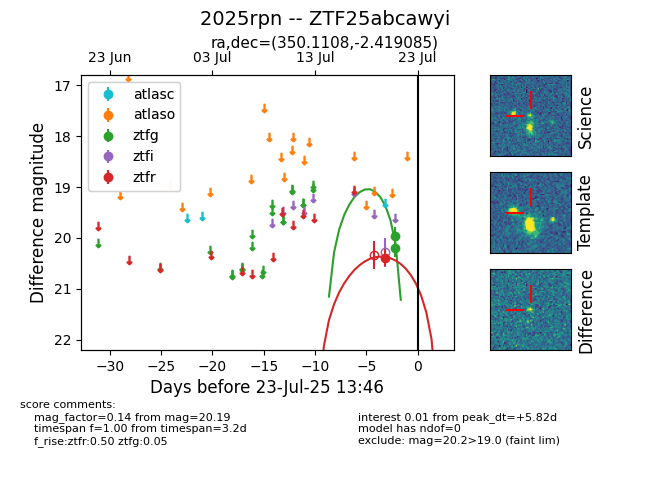

Target ZTF25abcawyi at 2025-07-23 13:46, see:
FINK: fink-portal.org/ZTF25abcawyi
Lasair: lasair-ztf.lsst.ac.uk/objects/ZTF25abcawyi
ALeRCE: alerce.online/object/ZTF25abcawyi
TNS: wis-tns.org/object/2025rpn
YSE: ziggy.ucolick.org/yse/transient_detail/2025rpn
alt names
ZTF25abcawyi (ztf,fink)
2025rpn (tns,yse)
coordinates:
equatorial (ra, dec) = (350.1108,-2.41908)
galactic (l, b) = (77.6509,-57.06321)
photometry
last ztfg=20.19, ztfr=20.39
2 ztfg, 1 ztfr detections
